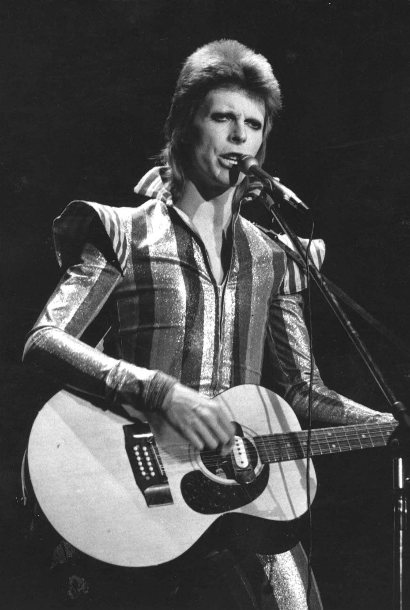

David Robert Jones (8 January 1947 – 10 January 2016), known
professionally as David Bowie , was an English singer-songwriter and
actor. He was a leading figure in the music industry and is considered
one of the most influential musicians of the 20th century, acclaimed
by critics and musicians, particularly for his innovative work during
the 1970s. His career was marked by reinvention and visual
presentation, with his music and stagecraft having a significant
impact on popular music. During his lifetime, his record sales,
estimated at over 100 million records worldwide, made him one of the
world's best-selling music artists.
Born in Brixton, Bowie developed an interest in music as a child,
eventually studying art, music and design before embarking on a
professional career as a musician in 1963. "Space Oddity" became his
first top-five entry on the UK Singles Chart after its release in July
1969. After a period of experimentation, he re-emerged in 1972 during
the glam rock era with his flamboyant and androgynous alter ego Ziggy
Stardust. The character was spearheaded by the success of his single
"Starman" and album The Rise and Fall of Ziggy Stardust and the
Spiders from Mars, which won him widespread popularity. In 1975,
Bowie's style shifted radically towards a sound he characterised as
"plastic soul", initially alienating many of his UK devotees but
garnering him his first major US crossover success with the number-one
single "Fame" and the album Young Americans.
After uneven commercial success in the late 1970s, Bowie had UK number
ones with the 1980 single "Ashes to Ashes", its parent album Scary
Monsters, and "Under Pressure", a 1981 collaboration with Queen. He
reached his commercial peak in 1983 with Let's Dance; the album's
title track topped both UK and US charts. Throughout the 1990s and
2000s, Bowie continued to experiment with musical styles, including
industrial and jungle. In 2013, Bowie returned from a decade-long
recording hiatus with The Next Day. He remained musically active until
he died of liver cancer at his home in New York City, two days after
his 69th birthday and the release of his final album, Blackstar
(2016).
“I always had a repulsive need to be something more than human. I felt very puny as a human. I thought, 'Fuck that. I want to be a superhuman.”

Bowie studied art, music, and design, including layout and
typesetting. He received a serious injury at school in 1962 when his
friend George Underwood punched him in the left eye during a fight
over a girl. After a series of operations during a four-month
hospitalisation, his doctors determined that the damage could not be
fully repaired and Bowie was left with faulty depth perception and a
permanently dilated pupil, which gave a false impression of a change
in the iris's colour; the eye later became one of Bowie's most
recognisable features.
Bowie met Angela Barnett in April 1969. They married within a year.
Her impact on him was immediate, and her involvement in his career
far-reaching, leaving manager Ken Pitt with limited influence which he
found frustrating. Having established himself as a solo artist with
"Space Oddity", Bowie began to sense a lacking: "a full-time band for
gigs and recording—people he could relate to personally". Bowie's
observation of two seminal American proto-punk artists led him to
develop a concept that eventually found form in the Ziggy Stardust
character: a melding of the persona of Iggy Pop with the music of Lou
Reed, producing "the ultimate pop idol".
Bowie's love of acting led his total immersion in the characters he
created for his music. "Offstage I'm a robot. Onstage I achieve
emotion. It's probably why I prefer dressing up as Ziggy to being
David." With satisfaction came severe personal difficulties: acting
the same role over an extended period, it became impossible for him to
separate Ziggy Stardust—and later, the Thin White Duke—from his own
character offstage. Ziggy, Bowie said, "wouldn't leave me alone for
years. That was when it all started to go sour ... My whole
personality was affected. It became very dangerous. I really did have
doubts about my sanity." His later Ziggy shows, which included songs
from both Ziggy Stardust and Aladdin Sane, were ultra-theatrical
affairs filled with shocking stage moments, such as Bowie stripping
down to a sumo wrestling loincloth or simulating oral sex with
Ronson's guitar.
David Robert Jones was born in Brixton on January 8, 1947. At age 13,
inspired by the jazz of the London West End, he picked up the
saxophone and called up Ronnie Ross for lessons. Early bands he played
with – The Kon-Rads, The King Bees, the Mannish Boys and the Lower
Third –provided him with an introduction into the showy worlds of pop
and mod, and by 1966 he was David Bowie, with long hair and
aspirations of stardom rustling about his head. Kenneth Pitt signed on
as his manager, and his career began with a handful of mostly
forgotten singles and a head full of ideas. It was not until 1969 that
the splash onto the charts would begin, with the legendary Space
Oddity.
Amidst his musical wanderings in the late '60s, the young Bowie
experimented with mixed media, cinema, mime, Tibetan Buddhism, acting
and love. A first rock album, originally titled David Bowie then
subsequently re-titled Man of Words, Man of Music and again as Space
Oddity, paid homage to the kaleidoscopic influences of the London
artistic scene, while hinting at a songwriting talent that was about
to yield some of rock n roll's finest and most distinctive work--even
if it would take the rest of the world a few years to catch up.
The lyrics describe Ziggy Stardust bringing a message of hope to
Earth's youth through the radio, salvation by an alien 'Starman'. The
story is told from the point of view of one of the youths who hears
Ziggy. According to Bowie himself, Ziggy Stardust is not the Starman
but merely his earthly messenger.
The song has inspired interpretations ranging from an allusion to the
Second Coming of Christ, to an accurate prediction of the plot for the
film Close Encounters of the Third Kind (1977).